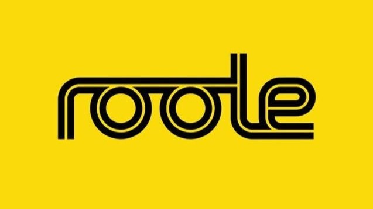

En un coup d'œil
- Relations presse & prises de parole
- Veille média et sectorielle
- Posts LinkedIn & éléments de langage
- Retombées TF1, M6, France 2, Le Figaro
Cliquez pour tout voir →
Roole
Mobilité, pouvoir d'achat, transition écologique : des sujets pas toujours faciles à rendre vivants. Mon rôle, les faire parler, sur LinkedIn comme dans les JT. Posts, éléments de langage, veille et relations presse.
Ouvrir le projet →